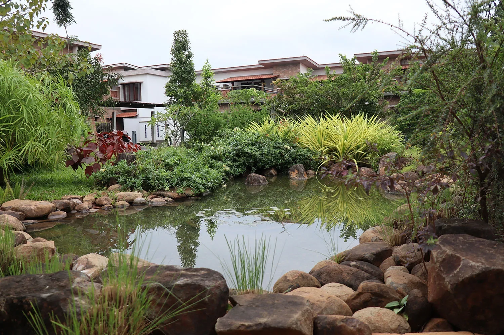
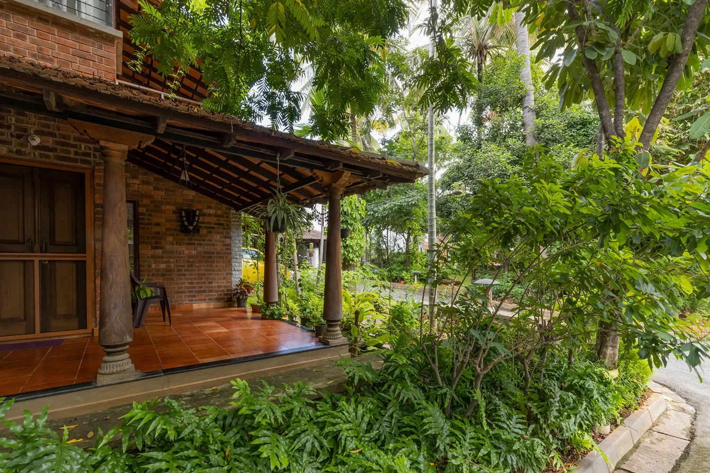
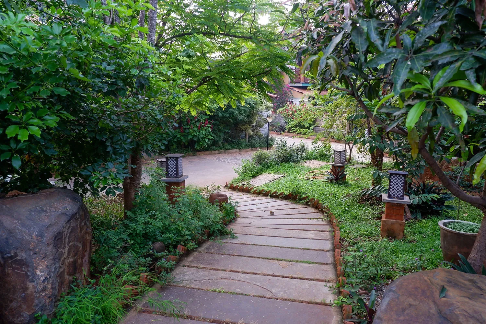
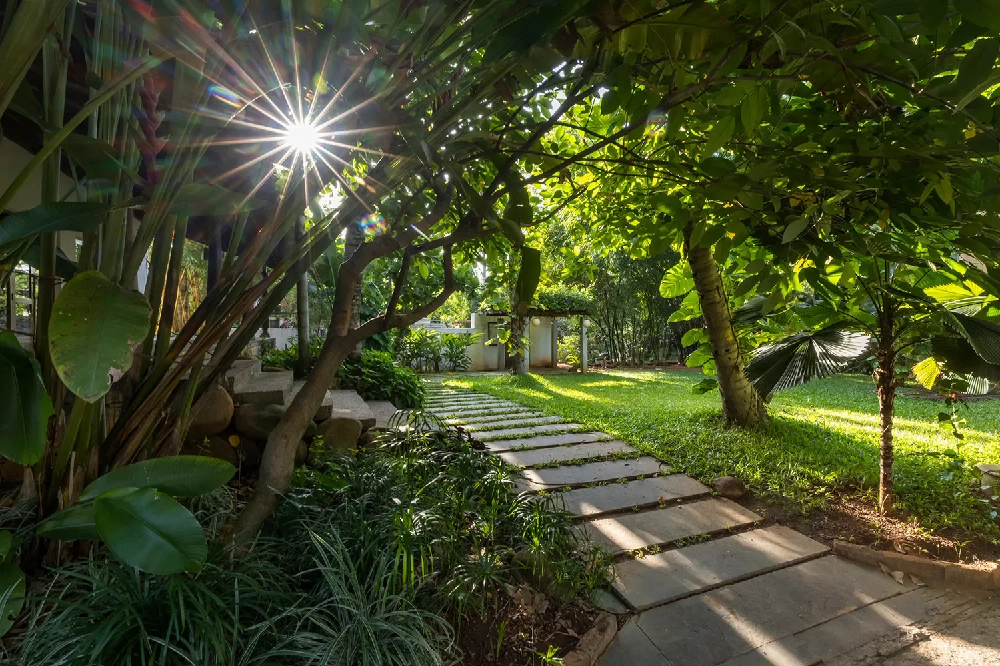
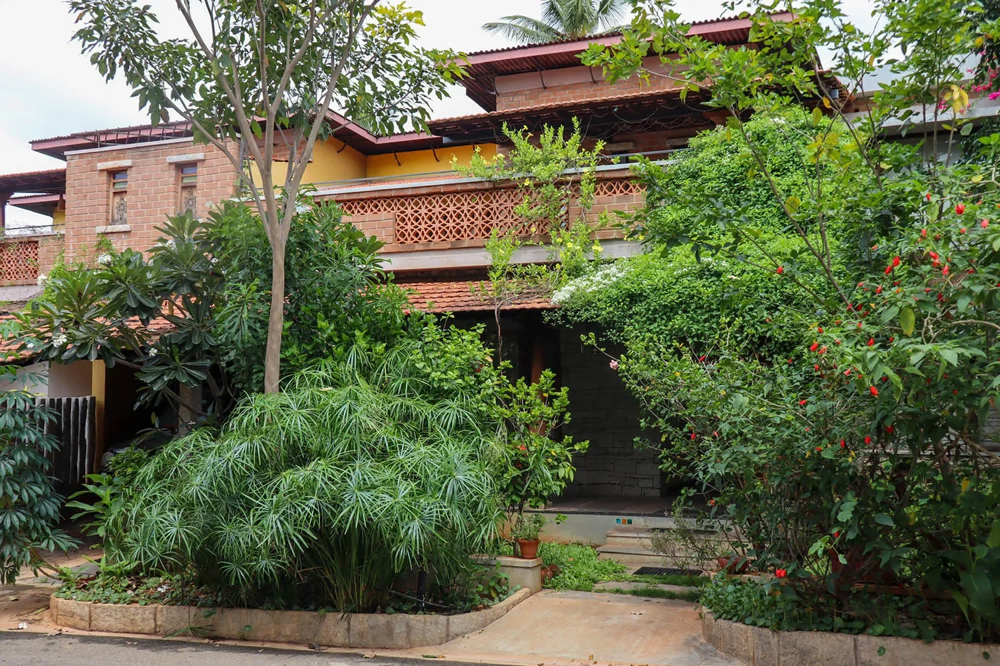
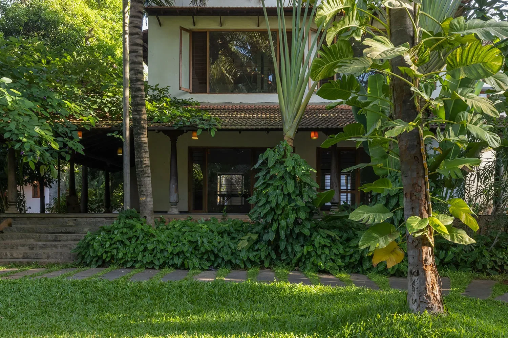
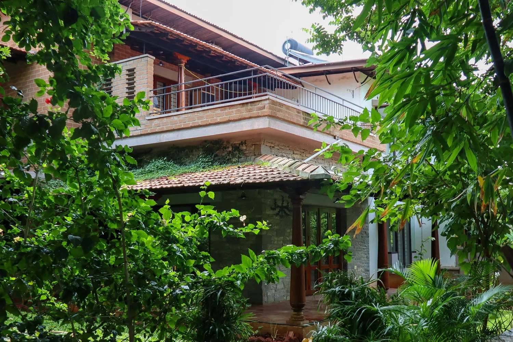

“Biophilia” is defined as “the innate human instinct to connect with nature and other living beings”. The term has been derived from the Greek words for “life” and “love or affection;” making its literal translation “love of life.”
The notion of Biophilia blends the materials found in nature, natural systems, materials, patterns and synergies to craft built environments that usher man close to nature. However Biophilia is much more than just an approach. Its ethos promotes cognitive function, inner health, physical well-being and an overall atmosphere of serenity.

Biophilic design in architecture attempts to connect the building residents to elements of nature, be it materials, lighting, design or natural landscaping. What Biophilic design does is to incorporate and blend natural elements into building designs. It maximises practical infusions of daylight, open views that help one visually access nature; usage of natural materials, and for the indoors natural features like lush indoor planting and if possible water driven features.
Katie Gloede an expert on Ecobuilding writes that “Maximizing natural light benefits people as well as energy bills, but biophilic interventions incorporate natural lighting from diffusion to temporal changes. A lighting system that either naturally or artificially changes throughout the day to mimic our circadian rhythm helps link people to the outdoor environment and, essentially, keep us on track with our natural 24 hour cycle. Maximizing natural light and changes throughout the day also enhances visual comfort.”

Research has indicated that spending a few hours (as little as two) per week can be beneficial and improve one’s wellbeing. People who spent as much time interacting with nature have reported better health than persons who spent time in highly urbanized environments. This effect holds true especially for children who spend time in nature driven environments reporting higher levels of physical activity and energy.

Biophilic design possesses a few specific sub-practices, namely:
How nature is incorporated within a space: this factor attempts to interrogate and at the same time implement the immediate presence of nature within a space in the form of water, greenery & plants, natural breeze, aromas, light, shadows, and a host of other nature borne elements.

Natural materials and interactions: here Biophilic design attempts to incorporate the tactile presence of natural materials, colors, objects, patterns and shapes incorporated into the interior and exterior of the building design. It also fans out to the décor, facade design and even the furniture.

One can waterfall the above categories into numerous sub-categories and practices that detail multiple routes of incorporating Biophilia into a building’s design. It is dependent on the type of building, purposes of the building and the preferences of the residents. However, the advantage of biophilic design is that its sub-entities and elements can be shaped and matched according the specific needs of the building and residents. It does not pronounce a one shape fits all approach and rather harkens towards a soft blending of needs and ethos into a living environment that caters to usage needs specifically.

One also needs to be aware of what constitutes Biophilic design and what does not. Quite often developers may add a simple feature like a fountain or garden to a project and make a claim of being close to nature. These are incongruent, individual elements that act as islands of impact rather than an element of a larger system which is the core of Biophlic design. It stresses on interconnected, interdependent and cross-supporting environments that act as a single organism at a larger scale. One needs to craft a larger picture that waterfalls the system down to the inhabitants and residents resulting in true benefits rather than shallow achievements. When the habitat expresses these qualities, the ecosystem performs at a level greater than the sum of its individual parts.
Another important factor of Biophilic design is that the experience of the habitat or building needs to continually reinforce the experience of engagement with nature, rather than a one-off interaction. An engagement with nature at one part of the built environment has to flow into the other. If not, then one is simply creating a cosmetic approach rather than a true Biophilic driven foundation.

However, the challenges that many entities involved with creating commercial or residential structures face is that balancing commercial interests versus staying true to the ethos of the concept can be a tough balancing act. Especially when one is driven by balance sheet factors like returns per square foot, then challenges are bound to enter the equation.
At the end of the day, if we place value on good health, respect for the environment and the health of our planet, we have to start incorporating the values and systems of Biophilia into the designs and engagements of our built environment from the largest structure to the smallest home. It is not hard and just needs to become an inherent value and ethos that is a core part of our daily lives.


Leave A Comment